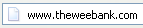
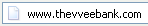
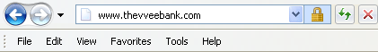
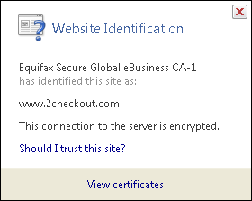
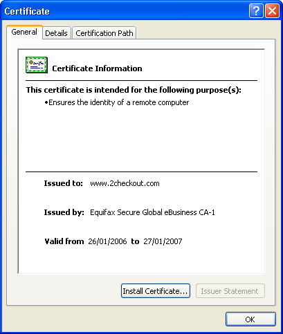
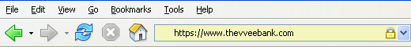
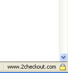

Online Banking - Essential Security Measures
Online banking is quite a handy way to keep track of your finances.
You simply log on through your bank's website, and you can do things
like set up standing orders, transfer money to people or other accounts,
and order cheque books. Online banking also allows you to get financial
deals that are just not on offer in the offline world. For convenience
sake, you can't beat an online bank!
However, this popularity of online banking has not gone unnoticed by
the criminal fraternity. We'll show you some popular attacks on your
money, and what you can do to prevent them.
Phishing
One of the most common ways that a criminal will attempt to part you
with your money is through something known as Phishing. Phishing is
pronounced FISH-ING. It's the Internet's equivalent of this popular
sport. The fisherman is a criminal, the bait is usually an email that
attempts to panic you into action, and the fish is you!
The criminal will send out thousands of email using a list he got from
a spammer. The email that is sent pretends to be from a bank. Let's
call it the Wee Bank. Most people the criminal sends the email to will
not have an account with the Wee Bank. But some will. It's those few
that he's after. In the email, you may be warned that your banking details
need updating, and that it's essential that you act now to protect your
account. They'll usually try to scare you into taking action. And there's
always a link for you to click on. All you need to do is to click on
the link and you'll be taken to a secure area where you can enter your
details.
If you click on any of these links, you'll be taken to a page that
does indeed look like your bank's website. Except it's not. One trick
the criminal may use is to have an address that looks similar to your
bank's. Your real bank is this:

Take a closer look at the address bar, though, and you may see something
like this:

The address has been spoofed. The "w" is now "vv"
- two V's and not one W. But some spoofed addresses are quite difficult
to spot, and even fool the more experienced surfers. You need to look
for other clues in your browser.
One thing that all browsers will have are padlock icons. These are
supposed to tell you that the site is using security measures. If you're
using Internet Explorer 7, you'll see this to the right of the address
bar:

Click on the padlock and you'll see information about the security
certificate (the one in the image below is for 2checkout - a genuine
source):

Click the link that says View Certificates, and you'll see something
like this:

Click the Details and Certification Path tabs at the
top. There should be plenty of details for you to view. Make sure the
certificate has not expired. In the image above, the security certificate
is from a good source, and it's still valid (at least, it was when this
article was written).
The Firefox browser has more visual clues than Internet Explorer. Notice
the address bar from Firefox:

The address bar will turn yellow on a secure site, and the padlock
is just to the left of the blue down arrow. Firefox also has another
padlock. Look in the bottom left and you'll see this:

Double click the padlocks and you'll see the security certificate.
Notice the name of the website to the left of the padlock. This one
is from a legitimate source - 2checkout.com
One more thing to note. The address for a secure site normally starts
with https. If the "s" is missing, it's not a secure site!
A last word of warning, however: these visual clues have been know
to be spoofed by the criminals! If in doubt, remember this:
You bank will NEVER send you an email asking
for your login details!
If you receive such an email, forward it to your bank. And DON'T click
on the link!
The same is true for other secure websites that hold your money - PayPal
never send you emails asking you to confirm your details! For a more
detailed look at Phishing, there's an excellent Wikipedia article here:
Phishing
Article
The latest versions of Firefox and Internet Explorer have anti-Phishing
measures built in. You should make sure these are turned on when accessing
secure websites. (In Internet Explorer 7, click Tools > Phishing
Filter > Check this Website.)
Password Protection
We've all got passwords. In fact we've all got LOTS of passwords! We've
got so many that it's become increasingly difficult to keep track of
them all. Banking passwords are no different. But the recommendation
is to keep changing each one every few months or so!
Because the whole password process is cumbersome, some people have
one password for all of the sites on the internet that ask for them.
This is something you should NEVER do! You need a different password
for each site. The reason is simple - if a criminal has your password
for one website, he's got them for all your sites - he could clean you
out!
The problem is, how do you remember them all? One technique for password
creation is to take letters and numbers from a favourite song, saying,
or something that's special to you. For example, a favourite song of
yours may be "happy birthday to you"! To turn this into a
password, take the initial letters of each word. You'd then have this:
hbty
Not very secure, but easy to remember. Let's complicate it a bit, by
adding some capitals:
HBty
Slightly more secure. Let's add a number:
HB2y
Getting better. How about a non alpha-numeric character?
HB_2y
Adding non alpha-numeric character helps password security enormously.
Let's make the password longer by singing Happy Birthday to Home and
Learn:
HB_2y_HBdhAL
Now, not only is the password longer, but it has a mix of numbers,
lowercase and uppercase letters, and non alpha-numeric character. This
makes it more secure, and harder for criminals to guess. (The password
is now "Happy Birthday to you. Happy Birthday dear Home and Learn".)
A password like this is also easier for you to remember.
Passwords should never be just four characters long! The reason is
that criminals may have password-cracking software. Using such software,
short passwords can be cracked in no time at all. Use at least 8 characters.
Duke University have a good page here that tells you how long it would
take to crack a password of up to 8 characters. The amount of time needed
to crack a password rises dramatically:
Duke
University Password Information
You and Your PC
You should never log in to your bank account using somebody else's
computer. Simply because you have no idea what security measures they
take, and whether or not the computer is infected.
Internet cafes are also not somewhere you should be entering security
information. In an internet cafe, all the data you enter is logged and
saved by the owners (they may be forced to do this by law). You can
never be sure that your data is safe from prying eyes. Also, what if
you forget to log out properly? The next person who uses the computer
could see all of your details, and have access to your bank account!
The only place you should be entering your bank details are from your
own PC. Of course, you need to make sure that your own computer is safe
from infection, and take sensible security measures when it comes to
the emails you receive. Follow the suggesting on our site and your PC
will be just that much more secure than it was yesterday!
 home
home